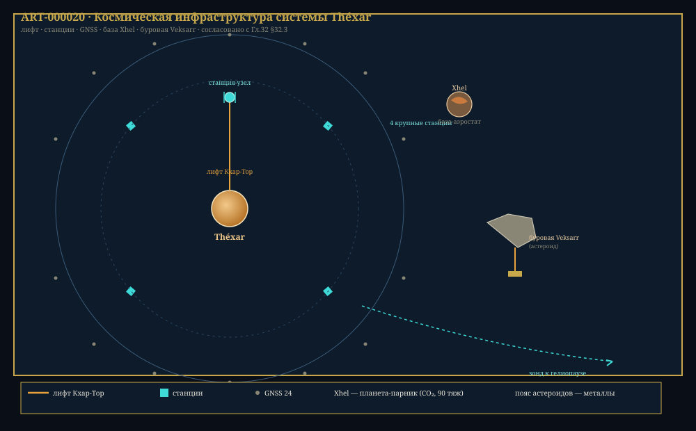

Глава 32: Система Khar'Vex — полный обзор
«Семь планет — семь нот одной симфонии. Каждая на своей орбите, каждая в своём ритме. Théxar — мелодия жизни, звучащая в этом звёздном оркестре.» — Из «Гармонии сфер» (астрономический трактат), +3 200 г. Э.Е.
Связанные разделы: → см. [Гл.02, «Звёздная система»], → см. [Гл.03, «Планета Théxar»], → см. [Гл.24, «Спутники»] Объём: 25 страниц
32.1 Звезда Khar'Vex
| Параметр | Значение |
|---|---|
| Спектральный класс | K2V |
| Масса | 0.82 |
| Радиус | 0.78 |
| Светимость | 0.41 |
| T фотосферы | 5 050 K |
| Возраст | 6.5 млрд циклов |
| Металличность | [Fe/H] = +0.12 |
| Продолжительность ГП | ~22 млрд циклов |
32.2 Планетная система
32.2.1 Внутренние планеты
| Планета | a (а.е.) | M | R | T (K) | Атмосфера | Спутники |
|---|---|---|---|---|---|---|
| Vax | 0.21 | 0.4 | 0.6 | 680 | Отсутствует | 0 |
| Xhel | 0.42 | 0.85 | 0.91 | 480 | CO₂ (95%), 90 тяж | 1 |
| Théxar | 0.63 | 0.92 | 0.96 | 285 | N₂ (72%), O₂ (23%) | 2 |
32.2.2 Vax
Ближайшая к Khar'Vex планета. Раскалённый каменный мир с температурой поверхности +266.4°X. Отсутствие атмосферы — следствие близости к звезде. Поверхность испещрена кратерами и застывшими базальтовыми потоками.
32.2.3 Xhel
Парниковая планета с плотной CO₂-атмосферой (давление 90 тяж). Температура поверхности +157.6°X. Имеет один спутник — Xhel-Mor (радиус 24.4 мо).
32.2.4 Внешние планеты
| Планета | a (а.е.) | M | R | T (K) | Тип | Спутники | Кольца |
|---|---|---|---|---|---|---|---|
| Zhal | 2.8 | 6.2 | 2.1 | 180 | Мини-нептун | 4 | Нет |
| Rhuun | 5.9 | 95.4 | 9.7 | 120 | Газ. гигант | 9 | Есть |
| Koss | 11.2 | 14.7 | 3.8 | 72 | Лед. гигант | 3 | Есть |
| Phor | 18.6 | 0.02 | 0.12 | 42 | Карликовая | 0 | Нет |
32.2.5 Rhuun — газовый гигант
- 9 спутников (крупнейший — Rhuun-Ven, 138 мо)
- Система колец (3 основных, ширина 2 440 мо)
- Большое Красное Пятно
32.2.6 Пояс астероидов
Расположен между орбитами Xhel и Zhal (1.15–1.65 а.е.). Богат металлами (Fe, Ni, Pt). Источник сырья для космической промышленности.

Рис. 32.1. Космическая инфраструктура системы Théxar: лифт Кхар-Тор, 4 станции, сеть GNSS (24), база-аэростат Xhel, буровая Veksarr, зонд к гелиопаузе — ART-000020.
Конец главы 32. Согласовано с CANON.md v0.3.0